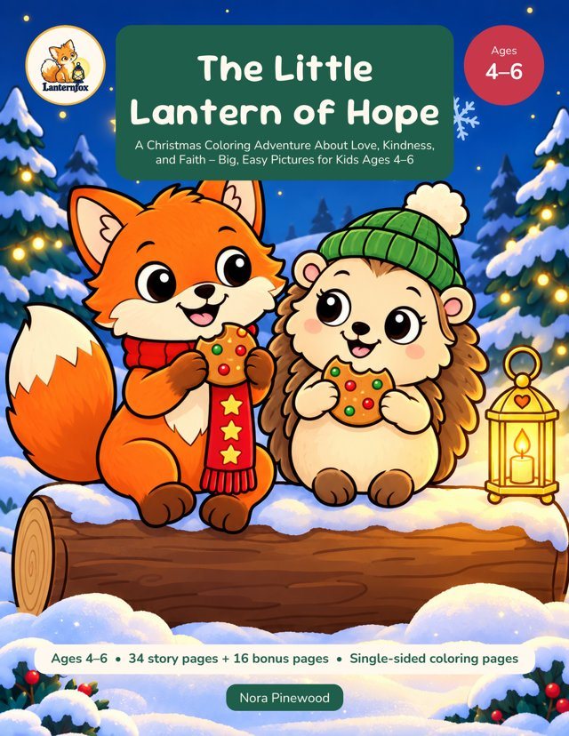
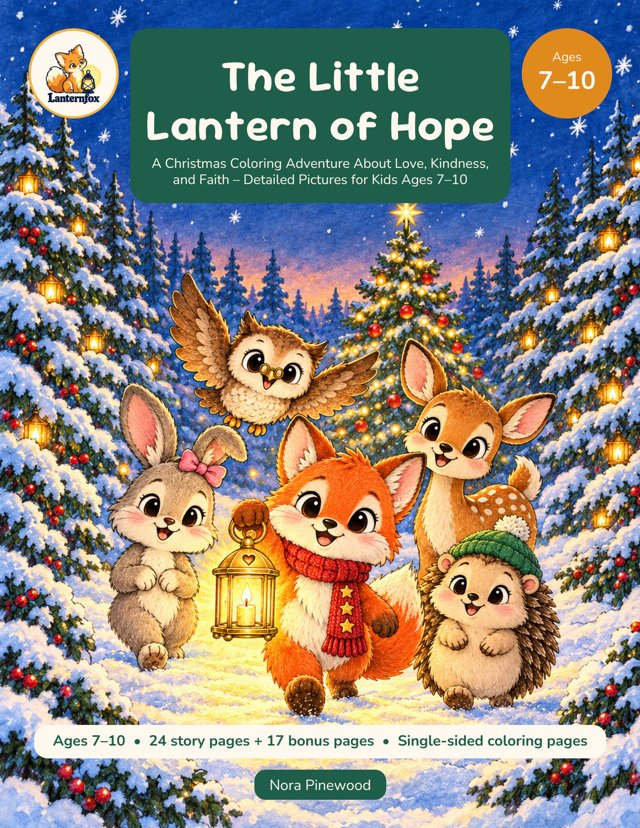
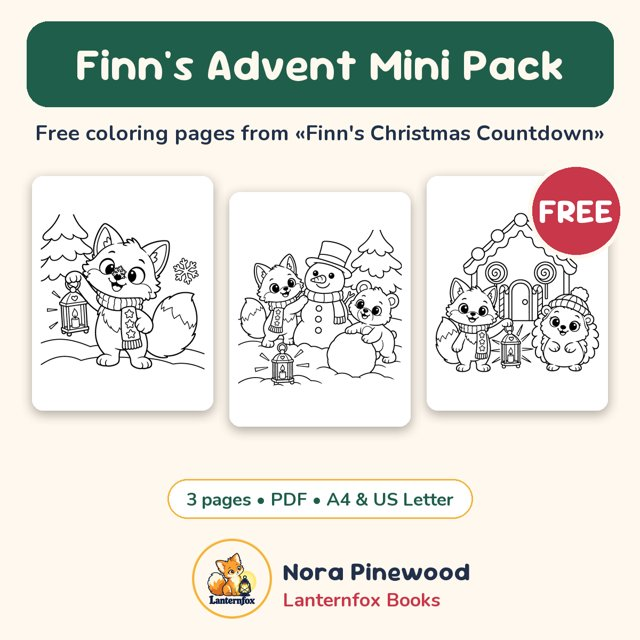
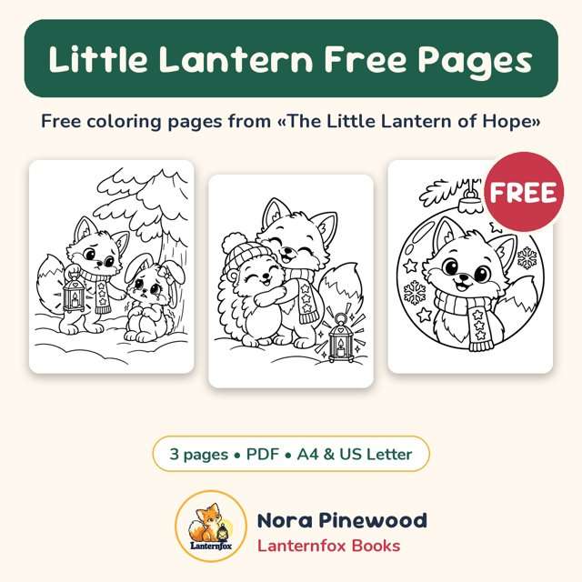
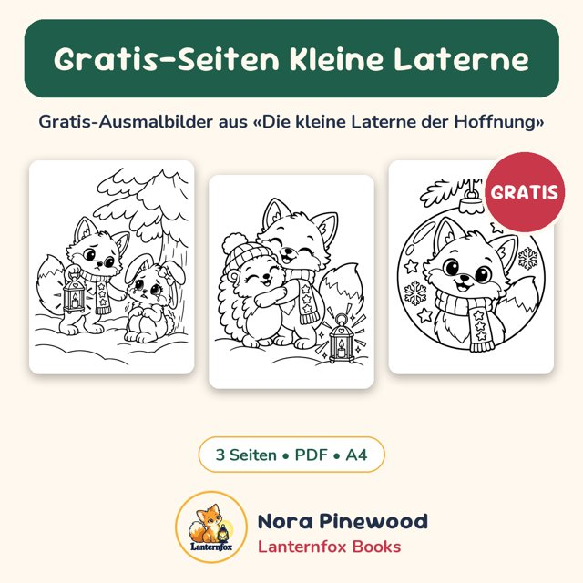
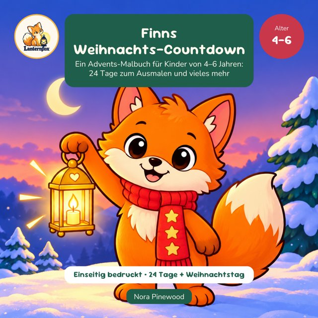
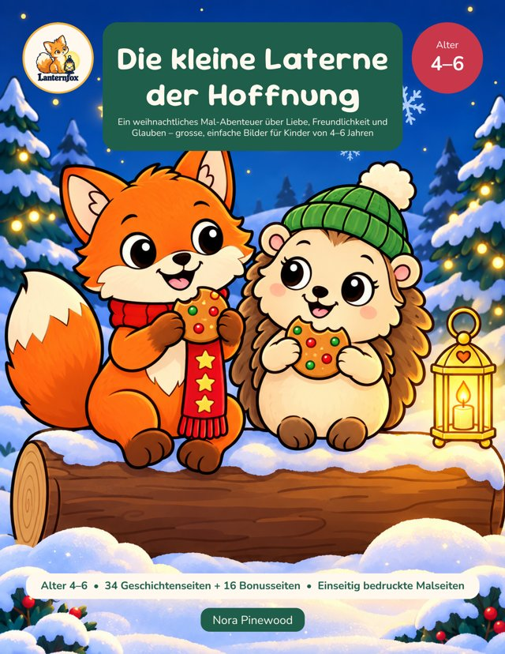
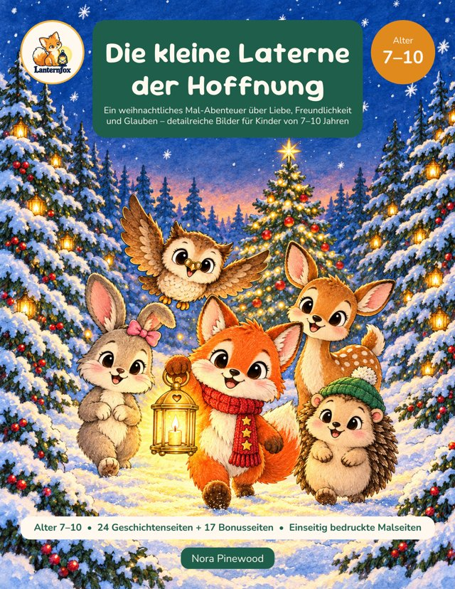

Coloring books and coloring storybooks for kids, made with love by Nora Pinewood. It all began with a coloring story for a little niece, starring Finn the lantern fox; more books are on the way: animals, everyday adventures, seasons and holidays. Every book has single-sided pages and big, bold lines.
Finn's Christmas Countdown
An Advent Coloring Book for Kids Ages 4–6: 24 Days of Coloring and Much More
Count down to Christmas with Finn the little lantern fox!
Finn's Christmas Countdown is an Advent coloring book for kids ages 4–6: one picture for every day from December 1 to December 24, plus a big Christmas Day page. A short story line under each picture continues day by day, so coloring becomes a little evening ritual.
Get the book
The Little Lantern of Hope
A Christmas Coloring Adventure About Love, Kindness, and Faith – Big, Easy Pictures for Kids Ages 4–6
Light up Christmas with Finn the little fox!
This is the Ages 4–6 edition: 34 big, simple pictures with thick, easy lines for little hands. For ages 7–10, look for the edition with detailed pictures.
Get the book
The Little Lantern of Hope
A Christmas Coloring Adventure About Love, Kindness, and Faith – Detailed Pictures for Kids Ages 7–10
Light up Christmas with Finn the little fox!
This is the Ages 7–10 edition: detailed, cozy pictures for confident young colorists. For ages 4–6, look for the edition with big, simple pictures.
Get the bookFree PDF downloads through Payhip. Print at home, in kindergarten or Sunday school.

Finn's Advent Mini Pack
Three free Christmas coloring pages with Finn the little lantern fox: the very first snowflake, building a snowman and a gingerbread house. Big, bold lines for kids ages 4–6. Instant PDF download in A4 and US Letter, print as often as you like at home, in kindergarten or Sunday school.
Download for free
Little Lantern Free Pages
Three free Christmas coloring pages from «The Little Lantern of Hope»: Finn finds Ruby the bunny in the snow, Hetti the hedgehog gives Finn a big hug, and a Finn ornament to color. Big, easy pictures for kids ages 4–6. Instant PDF download in A4 and US Letter.
Download for freeFinns Advents-Minipaket
Drei kostenlose Weihnachts-Ausmalbilder mit Finn, dem kleinen Laternenfuchs: die allererste Schneeflocke, ein Schneemann und ein Lebkuchenhaus. Grosse, klare Linien für Kinder von 4–6 Jahren. PDF in A4 zum sofortigen Herunterladen, beliebig oft ausdrucken – zu Hause, im Kindergarten oder in der Sonntagsschule.
Gratis herunterladen
Gratis-Seiten Kleine Laterne
Drei kostenlose Weihnachts-Ausmalbilder aus «Die kleine Laterne der Hoffnung»: Finn findet das Häschen Ruby im Schnee, die Igelin Hetti umarmt Finn, und eine Weihnachtskugel mit Finn zum Ausmalen. Grosse, einfache Bilder für Kinder von 4–6 Jahren. PDF in A4 zum sofortigen Herunterladen.
Gratis herunterladenMalbücher und Mal-Geschichtenbücher für Kinder, einseitig bedruckt und mit grossen klaren Linien.

Finns Weihnachts-Countdown
Ein Advents-Malbuch für Kinder von 4–6 Jahren: 24 Tage zum Ausmalen und vieles mehr
Zähl die Tage bis Weihnachten mit Finn und seiner leuchtenden Laterne!
«Finns Weihnachts-Countdown» ist ein Advents-Malbuch für Kinder von 4–6 Jahren: ein Bild für jeden Tag vom 1. bis 24. Dezember, dazu eine grosse Seite für den Weihnachtstag. Unter jedem Bild steht ein kurzer Satz, und die Geschichte geht jeden Tag weiter – so wird das Ausmalen zu einem kleinen Abendritual.
Zum Buch
Die kleine Laterne der Hoffnung
Ein weihnachtliches Mal-Abenteuer über Liebe, Freundlichkeit und Glauben – grosse, einfache Bilder für Kinder von 4–6 Jahren
Erlebe Weihnachten mit Finn, dem kleinen Fuchs!
Dies ist die Ausgabe für Kinder von 4–6 Jahren: 34 grosse, einfache Bilder mit dicken, klaren Linien für kleine Hände. Für Kinder von 7–10 Jahren gibt es die Ausgabe mit detailreichen Bildern.
Zum Buch
Die kleine Laterne der Hoffnung
Ein weihnachtliches Mal-Abenteuer über Liebe, Freundlichkeit und Glauben – detailreiche Bilder für Kinder von 7–10 Jahren
Erlebe Weihnachten mit Finn, dem kleinen Fuchs!
Dies ist die Ausgabe für Kinder von 7–10 Jahren: detailreiche, gemütliche Bilder für geübte junge Ausmalerinnen und Ausmaler. Für Kinder von 4–6 Jahren gibt es die Ausgabe mit grossen, einfachen Bildern.
Zum Buch